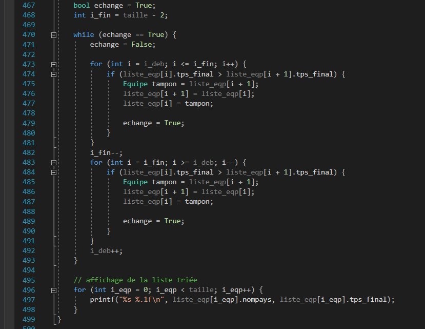
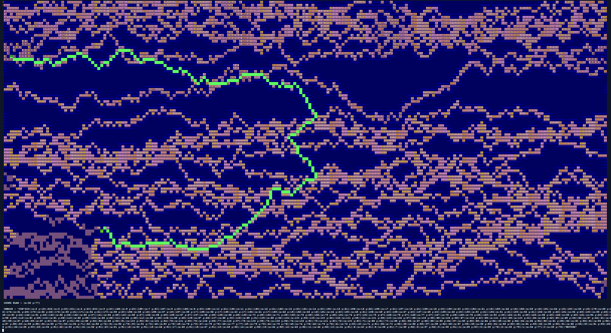
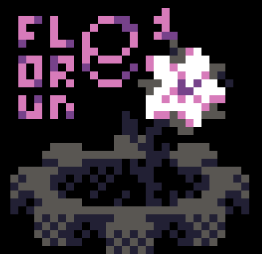

Je programme en langage C depuis septembre 2019. C'est un langage que j'ai appris à l'université. J'ai notamment co-réalisé un interpréteur de commande permettant de faire la gestion d'une compétition de patinage de vitesse (scores, classements...). Je peux utiliser toutes les fonctionnalités de base, l'allocation dynamique de mémoire, et m'adapter aux librairies.
assignment Programmation impérative
Langage C

Algorithme de tri shaker en C pour un projet universitaire
Programmation impérative en C++
Je programme en C++ depuis Octobre 2019, mais je n'ai pas encore essayé les fonctionnalités de programmation orientée objet avec ce langage. Je peux pour l'instant m'adapter aux librairies, coder des types dynamiques comme des piles et des listes dynamiques, avec toutes les fonctionnalitées attendues : tri, suppression de doublons ...

Visualisation dans le terminal linux de l'exécution de mon algorithme de recherche de chemin (ou "pathfinding") codé en C++.
Visualisation assurée par un autre programme en C++ faisant usage des codes de contrôle ANSI.
La sorte de "cavité" aux murs bleux foncés que l'algorithme explore est, quant à elle, générée en Python par un autre de mes programmes.
account_tree Programmation orientée objet
Python
Je programme en Python depuis septembre 2018. Je l'utilise très couramment et c'est mon langage préféré. Je l'utilise parfois pour automatiser certaines tâches redondantes. Par exemple, je génère mes jeux de donnée de test d'entrée en python pour mes projets universitaires (exemples ici et là).
Aussi, je développe depuis septembre 2019 un module faisant usage des fonctionnalités de la programmation orientée objet : Il s'agit d'un moteur graphique 2D ANSI-art / ASCII-art, couplé d'un moteur de jeux-vidéo, le tout en Python.Ainsi, ce moteur de jeu fait le rendu dans le terminal, à l'aide des codes de contrôle ANSI, en simulant un écran très basse résolution (un pixel = 2 espaces surlignés). Il contient des classes et des fonctions qui vous permettent de créer un jeu vidéo rétro et fluide qui se joue dans le "cmd" windows ou bien dans le terminal de linux. Ce module s'appelle Flore1. J'ai aussi crée Flore1-Paint, un logiciel complet de dessin et d'animation ANSI-art basé sur Flore1.
Je peux donc utiliser toutes les fonctionnalitées de Python, et m'adapter aux librairies.
Logo de Python, source de l'image
{kind=link}

Logo de Flore1, mon moteur graphique 2D-ANSI en Python pour le terminal.
Javascript / Node.js
Je programme en Javascript depuis fin 2014. J'ai notamment fait plusieurs jeux-vidéos 2D avec, mais ceux-ci étant mes premiers programmes (réalisés alors que j'avais 14-15 ans) ils n'étaient pas toujours très finis et soignés. Seulement, si vous voulez tester un de mes vieux jeux utilisant la librairie javascript Phaser 2 vous le pouvez ici, mais je vous préviens, il doit rester des fautes d'anglais de quand j'avais 15 ans, et votre navigateur ne sera peut-être pas compatible.
À part ça, j'ai aussi fait beaucoup de tchat bots servant à gérer des communautées sur la messagerie Discord, en utilisant discord.js. Ces tchat bots utilisaient mongoose.js permettant de faire le pont vers des bases de données de Mongo Db (exemple). Je sais donc me servir de Node.js.
Je peux autant utiliser Javascript pour faire des applications web, des jeux-vidéos en 2D, et des systèmes de client/serveur avec la librairie socket.io, avec laquelle j'ai déjà travaillé à maintes reprises pour mes jeux.
Logo de javascript,
source de l'image.
Logo de socket.io,
source de l'image.